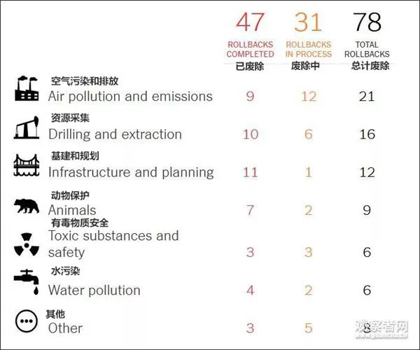
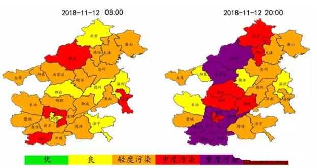
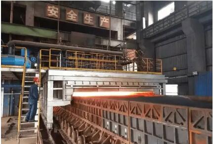

江西华邦复合材料有限公司专业从事电除雾器、湿式电除尘器及阳极管等除尘设备的研发生产
 13870005775
1387000577513870005775
邮箱：jiangxihb@163.com
近日，山西省生态环境厅印发了关于修订《山西省城市环境空气质量改善奖惩方案》的通知，通知规定PM 2.5 、PM 10 、二氧化硫浓度与考核基数相比，差值在 5 个微克以内（含）时，扣罚资金系数为 10 万元/微克，在 5 个微克以上时，扣罚资金系数为 20 万元/微克，全文如下。
▲ 来源：山西省生态环境厅
近日，山西省生态环境厅印发了关于修订《山西省城市环境空气质量改善奖惩方案》的通知，全文如下：
山西省生态环境厅
关于修订《山西省城市环境空气质量改善奖惩方案》的通知
各市生态环境局、财政局：
《山西省城市环境空气质量改善奖惩方案（试行）》从 2017年 10 月份实施以来，有效激发了地方政府大气污染防治积极性，有力推动了全省环境空气质量持续改善。为进一步完善环境空气质量改善奖惩机制，省生态环境厅、财政厅结合工作实际，对《山西省城市环境空气质量改善奖惩方案（试行）》进行了修订。现印发给你们，请认真贯彻落实。原《山西省城市空气质量改善奖惩方案（试行）》同时废止。
山西省生态环境厅 山西省财政厅
2019 年 1 月 24 日
附件：
山西省城市环境空气质量改善奖惩方案
为适应当前环境空气质量改善的形势，更好激励各市空气质量改善，科学合理实施空气质量奖惩，现对《山西省城市环境空气质量改善奖惩方案（试行）》进行修订，修订后方案如下。
一、考核对象
本方案适用于各设区市城市环境空气质量奖惩考核。各设区市可参照本方案对所辖县市区（包括财政体制政策试点县（市））环境空气质量改善情况进行奖惩考核。
二、考核指标
（一）采暖期（1 月、2 月、3 月、11 月、12 月）
环境空气质量奖惩考核因子为环境空气质量综合指数（以下简称“综合指数”）、PM2.5 、二氧化硫，其中 PM2.5 、二氧化硫浓度以微克/立方米计。
( 二）非采暖期（4 月 — 10 月）
环境空气质量奖惩考核因子为综合指数、PM2.5 、PM10 ，其中PM2.5 、PM10 浓度以微克/立方米计。
三、考核基数
综合指数、PM2.5 、PM 0 、二氧化硫浓度考核基数为当月全省平均值和考核城市去年同期值。
四、考核方法
首先对当月监测结果差于考核基数的，按照下列方法进行资金扣罚。根据单项扣罚资金总额，对当月监测结果好于考核基数的，给予资金奖补。
（一）资金扣罚
1.资金扣罚对象为当月指标监测结果同比恶化或高于全省平均值的城市。
2. 综合指数与考核基数相比，差值在 1 个数值（含）以内时，扣罚资金资金系数为 200 万元/个数值，超过 1 个数值时，扣罚资金系数为 400 万元/个数值。PM 2.5 、PM 10 、二氧化硫浓度与考核基数相比，差值在 5 个微克以内（含）时，扣罚资金系数为 10 万元/微克，在 5 个微克以上时，扣罚资金系数为 20 万元/微克。
3.单项指标扣罚资金=高于全省平均值的扣罚资金+同比恶化扣罚资金。高于全省平均值的扣罚资金=0.5×[（考核城市当月环境空气质量指标值-全省当月环境空气质量指标平均值）×扣罚资金系数]。同比恶化的扣罚资金=1.2×[（考核城市当月环境空气质量指标值-考核城市上年同期环境空气质量指标值）×扣罚资金系数]。
4.当月城市 PM 2.5 或 PM 10 达到国家《环境空气质量标准》二级标准的，以及二氧化硫浓度低于 30 微克/立方米（含）的，不进行扣罚。
（二）资金奖励
1.资金奖励对象为当月监测结果同比改善或优于全省平均值的城市。
2.当月全省单项指标奖励资金总额为扣罚资金总额的 80%。
3.单项指标奖励资金=同比改善奖励资金+优于全省平均值的奖励资金。同比改善奖励资金=80%×当月全省单项指标奖励资金总额×[考核城市当月指标同比下降值/全省同比改善城市当月指标同比下降值之和]。优于全省平均值的奖励资金=20%×当月全省单项指标奖励资金总额×[（全省平均值-考核城市当月指标值）/优于全省平均值的城市当月指标值与全省平均值差值之和]。
（三）其他
考核城市各单项指标环境空气质量奖励和扣罚资金相抵即为该城市当月环境空气质量奖惩资金。
五、数据来源
考核数据采用山西省环境监测中心站提供的各设区市环境空气质量自动监测数据。发现数据弄虚作假行为的，将按照有国家有关规定严肃处理。
六、考核组织
省生态环境厅负责每月对各市环境空气质量改善奖惩结果进行核算，将结果通报各市人民政府并在媒体公布。年终，各设区市将所辖财政体制政策试点县（市）环境空气质量改善奖惩情况报省生态环境厅。省财政厅依据省生态环境厅出具的奖惩结果汇总情况报告(财政体制政策试点县（市）要单列)，对各设区市和财政体制政策试点县（市）扣缴与奖励资金统一进行结算。
七、资金管理
（一）环境空气质量扣罚资金的 80%用于对各市空气质量奖励，20%由省级统筹使用。
（二）环境空气质量奖励及扣罚结余资金按照大气污染防治专项资金管理办法，统筹用于改善环境空气质量方面的项目，包括大气污染防治重点项目、环境空气质量监测和监管基础能力建设、相关科学研究等。省财政厅、省生态环境厅对资金使用进行监督管理。
八、其他
本方案印发之日起实施。原《山西省城市空气质量改善奖惩方案（试行）》同时废止。
▲ 来源:北京日报 作者：高健
最高法院、最高检察院、公安部、司法部、生态环境部近日联合发布《关于办理环境污染刑事案件有关问题座谈会纪要》（以下简称《纪要》），《纪要》加大对环境污染犯罪的惩治力度，提出重污染天气排污可追刑责。
打击单位犯罪
《纪要》提出，办理环境污染犯罪案件，认定单位犯罪时，应当依法合理把握追究刑事责任的范围，贯彻宽严相济刑事政策，重点打击出资者、经营者和主要获利者，既要防止不当缩小追究刑事责任的人员范围，又要防止打击面过大。
为了单位利益，实施环境污染行为，并具有经单位决策机构按照决策程序决定的；经单位实际控制人、主要负责人或者授权的分管负责人决定、同意的；单位实际控制人、主要负责人或者授权的分管负责人得知单位成员个人实施环境污染犯罪行为，并未加以制止或者及时采取措施，而是予以追认、纵容或者默许的；使用单位营业执照、合同书、公章、印鉴等对外开展活动，并调用单位车辆、船舶、生产设备、原辅材料等实施环境污染犯罪行为等情形之一的，应当认定为单位犯罪。
篡改伪造数据排污构成犯罪故意
主观过错，也是判定犯罪的一项重要标准。《纪要》指出，判断犯罪嫌疑人、被告人是否具有环境污染犯罪的故意，应当依据犯罪嫌疑人、被告人的任职情况、职业经历、专业背景、培训经历、本人因同类行为受到行政处罚或者刑事责任追究情况以及污染物种类、污染方式、资金流向等证据，结合其供述，进行综合分析判断。
《纪要》还以列举形式，说明主观故意情形。
具有下列情形之一，犯罪嫌疑人、被告人不能作出合理解释的，可以认定其故意实施环境污染犯罪，但有证据证明确系不知情的除外：企业没有依法通过环境影响评价，或者未依法取得排污许可证，排放污染物，或者已经通过环境影响评价并且防治污染设施验收合格后，擅自更改工艺流程、原辅材料，导致产生新的污染物质的；不使用验收合格的防治污染设施或者不按规范要求使用的；防治污染设施发生故障，发现后不及时排除，继续生产放任污染物排放的；生态环境部门责令限制生产、停产整治或者予以行政处罚后，继续生产放任污染物排放的；将危险废物委托第三方处置，没有尽到查验经营许可的义务，或者委托处置费用明显低于市场价格或者处置成本的；通过暗管、渗井、渗坑、裂隙、溶洞、灌注等逃避监管的方式排放污染物的；通过篡改、伪造监测数据的方式排放污染物的；其他足以认定的情形。
严重排污可按投放危险物质罪定罪量刑
《纪要》提出，对于行为人明知其排放、倾倒、处置的污染物含有毒害性、放射性、传染病病原体等危险物质，仍实施环境污染行为放任其危害公共安全，造成重大人员伤亡、重大公私财产损失等严重后果，以污染环境罪论处明显不足以罚当其罪的，可以按投放危险物质罪定罪量刑。
《纪要》提出，司法实践中打击涉大气污染环境犯罪，要抓住关键问题，紧盯薄弱环节，突出打击重点。对重污染天气预警期间，违反国家规定，超标排放二氧化硫、氮氧化物，受过行政处罚后又实施上述行为或者具有其他严重情节的，可以适用相关司法解释规定的“其他严重污染环境的情形”追究刑事责任。
对名为运输、贮存、利用，实为排放、倾倒、处置污染物的行为应当认定为非法排放、倾倒、处置行为，可以依法追究刑事责任。
长江经济带环境污染犯罪可从重处罚
《纪要》提出，要坚决贯彻党中央推动长江经济带发展的重大决策，为长江经济带共抓大保护、不搞大开发提供有力的司法保障。实践中，对于发生在长江经济带十一省（直辖市）的跨省（直辖市）排放、倾倒、处置有放射性的废物、含传染病病原体的废物、有毒物质或者其他有害物质的；向国家确定的重要江河、湖泊或者其他跨省（直辖市）江河、湖泊排放、倾倒、处置有放射性的废物、含传染病病原体的废物、有毒物质或者其他有害物质的，可以从重处罚。
特朗普政府27日宣布将放宽该国火力发电厂有毒气体（含汞等）的排放标准，原因是太贵了。
根据美国国家环境保护局（EPA）网站给出的公示，他们是这么算的：
若要让美国国内所有的火力发电厂遵循目前的排放标准，每年成本预计在74亿美元至96亿美元之间，而带来的经济收益（主要指公共卫生领域的节余）每年仅有400万美元至600万美元。

EPA继而认定，通过2011年制定的有害气体排放标准来管控发电厂的做法，是“不准确且不必要的”。
这条公示内容暂未进入美国立法进程，届时美国公民将有60天的时间对此提出意见。
美国乔治亚州的一家燃煤电厂 资料图
美国于 2003 年提出一项名为“清洁天空计划”法案，计划到 2018 年，将汞排放减69%，至15吨/年。2005年3月美国环保署推出了《洁净空气汞法》(CAMR)，首次规定了该国火电厂的汞排放，这也是世界上第一个规定汞排放的法规。
而据国内学术期刊《基层建设》2010年的数据，在美国，燃煤电厂已成为汞的最大排放源，每年要向大气输送48吨汞，占到全美国汞排放量的40% 以上。
到了2011年，EPA公布“汞及有毒气体（排放）标准（简称MATS）”，被《纽约时报》誉为是时任美国总统奥巴马的“标志性环保成就”。当时奥巴马执政时期，EPA又有另一种算法：
发电厂如果遵循排放标准，每年成本预计在96亿美元左右。但反之，美国每年将在公共卫生领域多支出370亿美元至900亿美元。奥巴马政府认为，这项排放标准每年可以防止4700起心脏病、13万起哮喘、以及1.1万起婴儿早逝的发生。
不过在2015年，美国最高法院以5:4的决议，驳回了这条2011年制定的排放标准，因为他们觉得奥巴马的算法有误。时任大法官斯卡利亚（Antonin Scalia）指出：“为了在卫生和环保领域省下几美元（few dollars），而造成数十亿美元的损失，这种做法非但‘不准确’，甚至有点不合理。”

9名法官进行表决，最终结果5:4，同意驳回
EPA如今重新算账，获得不少利益集团的赞赏。27日，美国国家矿业协会主席哈尔•昆（Hal Quinn）发表声明，批评奥巴马时期制定的排放标准“可能是针对美国消费者最大的一次审计诈骗。”
即便如此，还是有包括《华盛顿邮报》在内的美国媒体，认为特朗普又一次对奥巴马“政治遗产”展开了攻击。从上任出去退出《巴黎气候协定》开始，有关特朗普“环保意识淡薄”的批评不绝于耳。截至目前，就大气污染治理领域，特朗普政府已对9项相关条例进行了废除、重审、暂缓等操作。
而据哈佛大学法学院、哥伦比亚法学院跟踪预测，特朗普政府还计划废除21项大气污染有关法规。而就整个环保领域相关条例，特朗普至多会废除78项。

10月底还传出美国富士康工厂“获准将废料排放到湿地”的新闻，作为特朗普的支持者、威斯康辛州前共和党籍州长沃克（Scott Walker）被指违反环境相关法律。
《基层建设》指出，我国先后 4 次颁布实施有关燃煤电厂大气污染物的排放标准，标准中均没有设置汞的排放限值。在2015年开始实施的《火电厂大气污染物排放标准》(GB 13223 -2011)中增加了汞的排放指标：汞及其化合物排放浓度限为0.03mg/m³。
另据科学网消息，今年11月21日，第五届中国煤炭消费总量控制和能源转型国际研讨会在北京召开，会上分享了《“十三五”中期评估与后期展望研究报告（初稿）》，并明确指出，后两年的大气污染治理中，将增加汞和空气中氨氮总量控制指标，加大监管和督查，加大对煤炭消费的约束和压力。

我国已有针对汞的细节排放标准，虽然美国有大体的减排目标，但EPA在其官网上写道：目前美国的发电厂对于汞还没有一个统一的排放标准。
值得一提，曾有美媒在去年5月指出：与美国对中国在气候变化领域习以为常的看法不同，中国采取了多项且激进的措施对煤电领域进行整顿。中国不是美国，没有大量的天然气储备。煤电利用不可避免，所以中国在清洁煤电技术上投入巨资。
文章最后总结道，美国值得向中国学习，在电力领域逐步减少空气污染排放。

11月，生态环境部印发《长三角地区2018-2019年秋冬季大气污染综合治理攻坚行动方案》。《福建省重点工业行业VOCs治理推荐措施与技术》印发。四川、福建、黑龙江等地区发布了打赢蓝天保卫战三年行动计划。
蓝天保卫战
四川省重污染天气应急指挥部办公室印发《四川省2018—2019年秋冬季蓝天保卫战攻坚行动方案》。根据方案，今年秋冬季四川省将成都平原、川南、川东北地区为重点区域，坚持问题导向，强化结构调整、工程治理、联防联控和重污染天气应对，严格执法监管，强化督查问责，减少持续污染天数，减轻重污染天气影响，推动大气环境质量持续改善，完成全省未达标城市细颗粒物(PM2.5)浓度下降12%、优良天数率达到82.6%的2018年度目标任务。
福建省人民政府印发《福建省打赢蓝天保卫战三年行动计划实施方案》，到2020年，全省环境空气质量持续改善，保持优良水平，继续保持位居全国前列，全省设区城市空气质量优良天数比例达到国家考核要求，6项污染物指标优于国家标准，PM10、PM2.5浓度进一步下降，PM2.5浓度力争降到25微克／立方米，臭氧浓度升高趋势得到有效遏制；全省二氧化硫、氮氧化物重点工程减排量分别达到3.5万吨、4.6万吨，挥发性有机物（VOCs）排放总量较2015年下降10%以上。
黑龙江省人民政府印发了《黑龙江省打赢蓝天保卫战三年行动计划》，《计划》要求，到2020年，全省PM2.5未达标地级及以上城市浓度比2015年下降15%以上，地级及以上城市空气质量优良天数比率达到88%，哈尔滨市PM2.5年均浓度比2015年下降25%以上，空气质量优良天数比率达到80%以上。齐齐哈尔市、牡丹江市等接近国家空气质量二级标准的城市实现达标;佳木斯市、大庆市、鸡西市、双鸭山市、鹤岗市、绥化市基本保持达到国家空气质量二级标准。
大气污染治理
生态环境部印发《长三角地区2018-2019年秋冬季大气污染综合治理攻坚行动方案》。全面完成2018年空气质量改善目标；秋冬季期间（2018年10月1日至2019年3月31日），长三角地区PM2.5平均浓度同比下降3%左右，重度及以上污染天数同比减少3%左右。
广西壮族自治区人民政府办公厅发布《关于印发广西大气污染防治攻坚三年作战方案(2018—2020年)》的通知，到2020年，细颗粒物(PM2.5)未达标的12个设区市(已达标的北海市、防城港市继续巩固提升)浓度比2015年下降15%;设区市空气质量优良天数比率达到91.5%;二氧化硫、氮氧化物排放量比2015年减少13%。
山西省人民政府办公厅印发《关于开展2018—2019年秋冬季大气污染综合治理攻坚行动促进空气质量进一步改善的通知》，要求各市严格落实主体责任。各市人民政府是本地实施大气污染防治工作的责任主体，市长为第一责任人，对于产业结构优化调整、重污染企业退城搬迁、清洁取暖和散煤替代、柴油货车污染治理等重点任务，各市市长要直接负责。
内蒙古自治区人民政府网站正式发布《内蒙古自治区人民政府办公厅关于印发2018年度大气污染防治实施方案的通知》，对内蒙古的大气污染防治工作进行规划。
山东省印发了《山东省落实〈京津冀及周边地区2018—2019年秋冬季大气污染综合治理攻坚行动方案〉实施细则》，《细则》提出，加大钢铁、焦化、火电等行业产能淘汰和压减力度，列入去产能的钢铁企业，一并退出配套的烧结、焦炉、高炉等设备。
为贯彻落实国家秋冬季攻坚行动要求，北京市印发实施了“北京市秋冬季攻坚细化分解方案”，坚持“精治、法治、共治”、“落细、落小、落实”的原则，确定了秋冬季(2018年10月—2019年3月)北京市及各区空气质量持续改善的目标，并细化提出了10大类、29项攻坚措施。一是标本兼治，治本为主；二是聚焦问题、重点突出；三是强化应急、削峰降速；四是细化分工、落实责任。
《福建省大气污染防治条例》经省人大常委会会议表决通过，将于明年1月1日起施行。条例强化源头防控，实行大气污染联防联控，对于公众关注的突发环境事件，完善了应急处置机制。
11月28日，《青海省大气污染防治条例》经省十三届人大会常委会第七次会议审议通过，将于2019年2月1日起施行。
《湖北省大气污染防治条例》已由湖北省第十三届人民代表大会常务委员会第六次会议于2018年11月19日修订通过，现将修订后的《湖北省大气污染防治条例》公布，自2019年6月1日起施行。
广西自治区十三届人大常委会第六次会议，表决通过《广西壮族自治区大气污染防治条例》。《条例》对大气污染防治法等上位法进行了细化，并结合广西实际补充了相关规定严控大气污染。《条例》将于2019年1月1日起施行。
29日，云南省十三届人大常委会第七次会议表决通过了《云南省大气污染防治条例》，该条例将于2019年1月1日起实施。《条例》明确，禁止在居民住宅楼、未配套设立专用烟道的商住综合楼新建、改建、扩建产生油烟、异味、废气的餐饮服务项目。县级以上政府可划定禁止露天烧烤的区域。
VOCs治理
《福建省重点工业行业VOCs治理推荐措施与技术》印发。适合炼油与石化、化工、表面涂装、包装印刷等行业。
扬尘治理
北京印发《北京市打赢蓝天保卫战三年行动计划2018年重点任务措施和2018-2019年秋冬季住建系统施工现场扬尘治理攻坚行动方案》，确保完成2018-2019年秋冬季扬尘治理各项目标任务。
技术规范
生态环境部印发《固定污染源废气一氧化碳的测定 定电位电解法》（HJ973-2018）。本标准规定了测定固定污染源废气中一氧化碳的定电位电解法。本标准中的浓度泛指质量浓度或体积分数。本标准的附录A为资料性附录。本标准为首次发布。
上海市技术质量监督局正式颁布了《环境空气非甲烷总烃在线监测技术规范》（DB 31/T 1090-2018）。规定了环境空气、厂界、以及工业区边界的非甲烷总烃在线监测方法——直接法和差减法两类，规范了非甲烷总烃在线监测技术，显著提高了各FID检测器一致性。
上海市技术质量监督局正式颁布了《环境空气有机硫在线监测技术规范》（DB 31/T 1089-2018）。规定了环境空气、厂界、以及工业区边界的甲硫醇、乙硫醇、甲硫醚、二硫化碳、乙硫醚、二甲二硫醚等6种有机硫物质在线监测方法。
2018年11月12日，浙江省质量技术监督局批准发布了DB33/T 2167-2018《燃煤电厂固定污染源废气低浓度排放监测技术规范》省级地方标准。采用燃油、燃气、煤矸石、生物质、油页岩、石油焦、生活垃圾、危险废物等燃料的固定污染源废气相应污染物低浓度排放监测可参照执行。
来源：中国大气网 作者：李丹
同为可再生能源，在风电、光伏补贴逐步退坡的形势下，装机规模已超“十三五”规划目标的生物质电价政策是否会有调整，受到业界高度关注。
近日，由国家可再生能源中心、国家发展改革委能源研究所、中国产业发展促进会生物质能产业分会联合编制的《生物质电价政策研究报告》（以下简称《报告》）在北京发布。
《报告》认为
退坡机制主要是针对风电和光伏发电产业出台的政策。在现有电价政策下，大部分生物质发电项目维持微盈利水平或在盈亏平衡线上下浮动，而且从近期看，生物质发电成本不具备大幅下降空间。未来生物质发电将逐步转型升级为热电联产。
装机规模超规划目标
生物质发电是生物质能利用的最普遍方式之一，是继风电、光伏发电之后的第三大非水可再生能源发电产业。今年以来，其装机规模延续去年稳步增长态势，超过“十三五”规划目标。
据国家能源局发布的数据，截至2018年9月底，我国可再生能源发电装机达到7.06亿千瓦，同比增长12%。其中，生物质发电装机1691万千瓦，同比增长18.8%，高出可再生能源发电装机同期增速6.8个百分点，与其去年全年增速基本持平。累计生物质发电排名前四位的省份是山东、浙江、安徽和江苏，分别为249万、175万、159万和158万千瓦。
今年前三季度
生物质发电新增装机215万千瓦，占可再生能源新增电力装机的3.8%，较去年底时约2.2%的占比进一步提升；发电量661亿千瓦时，同比增长16.4%。
到2020年
而据《生物质能发展“十三五”规划》，到2020年，生物质发电总装机容量达到1500万千瓦，年发电量900亿千瓦时，其中农林生物质直燃发电700万千瓦，城镇生活垃圾焚烧发电750万千瓦，沼气发电50万千瓦。显然，生物质发电速度已超出“十三五”规划预期。实际上，三类发电形式并网装机容量在去年底时已逼近规划目标，分别为700.8万、725.1万和49.9万千瓦。
与此同时
生物质发电补贴也形成资金缺口。《报告》指出，截至2017年底，未列入可再生能源电价附加资金目录的补助资金和未发放补助资金共计约143.64亿元。未纳入可再生能源电价附加资金支持目录的项目的总装机规模已达122.8万千瓦，约占生物质发电装机的8%。
短期内补贴退坡依据不充分
增速超规划预期、补贴拖欠，这两个导致光伏、风电电价政策收紧的重要因素，将对生物质电价产生何种影响，成为行业之忧。
目前，农林生物质发电上网电价为0.75元/千瓦时，垃圾焚烧发电电价在入厂垃圾处理量折算的上网电量内为0.65元/千瓦时，其余上网电量执行当地同类燃煤发电机组上网电价。《报告》从生物质发电的产业定性、发电成本等方面进行分析，指出了保持连续稳定的生物质电价政策的必要性。
《报告》认为
生物质发电属于环保和民生效应优先的低碳可再生能源清洁电力。其在农村和城市中承担的废弃物处理的重任是风电和光伏发电无法取代的；其燃料的购买、收集、装运和存储等费用支出约280～320元／吨，其中很多工作需要农民参与，可以显著增加农民就业和收入。
从发电成本来看，在现有电价政策下，大部分生物质发电项目维持微盈利水平或在盈亏平衡线上下浮动，而风电和光伏发电成本在近年来快速下降，平价上网近在眼前。尽管生物质发电也在积极探索降低成本的可行性路径，但生物质燃料成本和未来随排放标准的提高造成的环保成本的增长，足以抵消技术进步带来的成本下降。无疑，生物质发电补贴退坡会影响产业发展动力。
记者还了解到，今年初，国家能源局下发《关于开展“十三五”生物质发电规划修订工作的通知》，启动“十三五”生物质发电规划修订工作，或将调增规划目标，增加享受国家补贴的项目规模。因为2017年7月国家能源局印发的《生物质发电“十三五”规划布局方案》，一次性下达了2334万千瓦的规模；更早公布的《可再生能源中长期发展规划》还曾设定过3000万千瓦的目标。
未来要向热电联产转型升级
未来生物质发电将逐步转型升级为生物质热电联产，以提高能源利用效率和综合效益。《报告》指出，农林生物质发电大多以纯发电为主，能源转换效率不足30％，产品单一、项目经济效益较差，限制了我国生物质发电规模的进一步扩大。从国外的生物质利用经验看，生物质热电联产方式的能源转化效率将达到60%-80%，比单纯发电的效率提高一倍以上。
国家层面正在鼓励、支持和引导这一转型。
记者梳理发现，近一年多来发布的《北方地区冬季清洁取暖规划(2017-2021)》《关于可再生能源发展“十三五”规划实施的指导意见》《关于促进生物质能供热发展指导意见的通知》《国家能源局关于开展“百个城镇”生物质热电联产县域清洁供热示范项目建设的通知》等政策文件均鼓励发展生物质热电联产。
上述文件明确，从严控制只发电不供热项目。到2020年，生物质热电联产装机容量超过1200万千瓦，到2035年将超过2500万千瓦。“百个城镇”生物质热电联产县域清洁供热示范项目力争2018年底前建成（或完成技改）。
然而，转型升级并非易事。《报告》指出，生物质发电向热电联产方向改造升级的过程中仍面临热源和热需求不匹配、居民供暖热价倒挂等问题。特别是，目前补贴机制主要集中在电力生产端，在供热端缺乏合理适宜的补贴措施。
考虑到各地经济条件和热需求状况差异，《报告》建议，因地制宜的研究制定地方性热价补贴政策，针对居民供暖和工业供热等不同热力用户采取相应补贴措施。出台地方生物质供热的相关财税补贴优惠政策，有效缓解当前可再生能源电价附加资金紧张状况。

我国大气污染源主要集中于工业污染和汽车尾气，根据环境部发布的《2017年中国环境状况公报》，我国338个城市中大气的主要污染物集中在PM2.5、PM10、臭氧和氮氧化物。其中较为严重的是PM2.5和PM10。在统计的338个城市里，这两项指标差的城市比例高达50%以上。改善空气质量要从上述4种物质的排放源下手。
PM2.5和PM10其实就是直径不同的粉尘，另外，臭氧是氮氧化物与挥发性有机物（VOCs）在空气中经过复杂的化学反应形成的二次污染物。因此为了控制我国大气污染，需要追踪粉尘、氮氧化物和VOCs的排放源情况。根据《我国大气污染来源分析》一文中的统计，我国粉尘和氮氧化物的主要排放源都是工业生产，分别占到了83%和71%。而机动车排放占大气氮氧化物排放的27%，是第二污染源。


如果将工业领域进一步细分的话，电力（特别是火电）、钢铁和建材行业是排放烟粉尘和氮氧化物的主要行业。这三个行业占到所有工业这两项污染物排放的70%以上。
为了实现减排的目标，2010年我国曾经执行了以拉闸限电为强制手段的限产行动，依靠限产减少工业污染很难持续。钢铁、水泥价格的上涨使限产之路很难持续，一旦这些行业供求关系好转之后继续限产，虽然对空气环境的控制仍有好处，但会导致供求关系的反向失衡，造成产品价格的大幅度上涨，从而增加下游行业的成本，对国民经济造成不必要的伤害。所以工业限排力度将继续加强，限产之路越走越窄的情况下，为了减少工业生产对大气的污染，进一步提高在产产能的排放标准就成为具备可操作性的政策选择。我国计划在东部地区、中部地区、西部地区分别于2017年、2018年和2020年前基本完成燃煤电厂的超低排放改造。2017年1月5日，国家能源局发布《能源“十三五”规划》及《可再生能源“十三五”规划》，其中提出，为优化现有能源系统，继续深入推进煤电超低排放和节能改造，“十三五”期间要完成煤电机组超低排放改造4.2亿千瓦，节能改造3.4亿千瓦。
介于此前的“超低排放”指标的达成程度，以及2017年后对于超低排放标准覆盖率的进一步提升，我们预计未来全部火电工业都将采取“超低排放”标准。据中国产业信息网数据显示，2007年至2017年十年间，中国火电装机6000千瓦及以上火电设备容量增速呈逐年放缓趋势，10年内累计增速同步放缓约47%。照此趋势判断，至2030年我国火电装机量增速约为2.27%，火电装机量约可达到16.22亿千瓦；减去4.5亿千瓦前期已完成指标，仍有新增改造空间约6.43亿千瓦，新建空间5.29亿千瓦，新增市场空间1178~2183亿元。
环保之路，非电工业限排将成为下一个主战场，与排放标准极为严格的电力行业相比，非电行业目前各自的排放标准相对宽松，钢铁、建材和炼焦行业等各项排放指标均存在很大的改善空间。
钢铁行业的SO2年排放量仅次于燃煤电力，居第二位，占全国SO2总排放量的10%；而全国钢铁行业现行排放标准中三大主要空气污染物SO2、NOx、烟尘排放标准依次约为200、300和50mg/m3，远高于煤电超低排放的标准，迫于严峻的环保形势，各地方政府在全国全面提高排放标准之前就已经开始了对非电行业排放限值的进一步提升，2017年6月，环保部发布《钢铁烧结、球团工业大气污染排放标准》等20项国家污染物排放标准修改单，重点区域非电行业标准开始收严，预计针对非电领域的工业环保要求将进一步提高。
汽车减排以提高排放标准和电动车替代升级为主要方向，改善汽车尾气排放的长效机制是在提高汽车尾气排放标准的同时，增加新能源汽车在汽车使用量中的占比，逐渐减少存量汽车污染物的排放量。
我国生活污水排放占比高达70%以上，工业污水的排放量每年以2%以上的速度下降，农村污水处理设施还存在较大缺口，农村污水处理率为22%，远远落后于城镇的污水处理率，“水十条”和《全国农村环境综合整治“十三五”规划》中提出，2020年全国农村污水处理率计划达到70%，新增完成环境综合整治的建制村13万个，累计达到全国建制村总数的三分之一以上。
根据国际经验，工业增长达到一定阶段以后，工业污水数量将开始出现下滑，而且会呈现逐年下降的趋势，从目前我国水环境的污染程度来看，提高后的标准实施效果仍然不能满足我国水体环境改善的要求。因此我们预计未来工业废水的排放标准仍然会进一步提高。
流域治理从全流域角度考虑排放限值，我国首次运用流域治理的思路对长江整体生态环境保护进行的顶层设计，其对长江流域水环境的重要影响就是从全流域角度进行排污口的整改。长江水资源总量占全国的35%，流域覆盖15个省、2个自治区、2个直辖市，哺育人口占比全国高达40%；截至2017年7月，长江经济带GDP占比全国已经超过了40%。因此长江流域的环境治理对我国整体的生态环境有着举足轻重的影响。
我国土壤环保，特别是已污染土壤的修复工作，目前还处在起步的阶段，对土壤污染的程度还没有全面准确的认识，没有健全的法制法规体系，壤修复技术还处于起步阶段，处于技术研发和产业化初期。土壤修复只能作为我国土壤环保中长期目标。目前应以控制污染的进一步扩大，减小污染源的进一步排放作为目前较为现实的工作目标。
改善对涉及民生领域的管控措施，制定压非保民工作方案，优先确保民生需求、扶贫攻坚、重点项目等工程实施；对战略性新兴产业、现代服务业、环保“领跑者”企业和环境友好的成长型中小微企业，加大扶持力度，引导其规范发展，保障正常生产；对不符合产业政策、手续不全、治理无望、不能稳定达标排放的企业，坚决依法关停取缔；对资源环境效率低、排放总量大、污染严重的企业，根据排放量及排放强度分级分类管控，建立秋冬季错峰生产企业清单。针对重污染天气，要逐企业制定重污染天气应急预案。重污染天气期间，对能够稳定达到超低排放限值的工序和设备，达到“绿色”建材行业大气污染物排放标准目标的企业，按照“多排多限、少排少限、不排不限”的原则，采取适度应急减排措施。

根据中国环境监测总站最新预测预报结果，11月13日至15日，京津冀及周边地区和汾渭平原受不利气象条件影响，将发生一次大气重污染过程。国家大气污染防治攻关联合中心及时组织专家会商，邀请中国环境科学研究院大气环境首席科学家柴发合研究员对本次污染过程的来源成因进行解读。
一、总体情况
11月12日起，京津冀及周边地区和汾渭平原气象条件逐渐转差，污染物缓慢累积。12日0时，安阳市PM2.5浓度首先达到小时重度污染，随后郑州、新乡、邢台等多个城市的PM2.5浓度达到小时重度污染，并逐渐向北发展。截止12日22时，区域内PM2.5小时浓度最高值为206微克/立方米，出现在开封（12日19时）。北京市PM2.5小时浓度最高值达150微克/立方米（12日21时）。

图1 “2+26”城市11月12日典型时段PM2.5浓度分布图
根据中国环境监测总站最新预测预报结果，11月13日至15日，京津冀及周边地区和汾渭平原受不利气象条件影响，北京、天津、江西省中南部、山西省东部和南部、山东省西部、河南省北部以及关中地区部分城市空气质量将连续2至3天达到重度污染，个别城市可能出现严重污染。北京市13日空气质量以中至重度污染为主，14日可能达重度污染，15日上午可能维持重度污染，中午前后预计有所改善。
二、成因分析
1、气象条件
12日起，京津冀及周边地区近地面转为以弱南风为主，区域夜间风速降低、湿度增大，大气扩散条件转差，多数城市出现静稳、高湿和逆温现象，污染物逐步积累。各地气象部门已分别发布了大雾预警。12日夜间，北京市受大气中层逆温以及近地面高湿的叠加影响，有利于二次颗粒物的快速转化和吸湿增长，推高PM2.5浓度。

图2 “2+26”城市11日20时区域风速和相对湿度分布
2、污染排放
目前，工业和交通领域大气污染物排放量仍居高位，各类施工量大面广，扬尘控制仍不到位，同时，北方地区已进入初冬时节，天气渐冷，城市建成区陆续启动冬季采暖，农村地区也开始自采暖，区域污染物排放量有所增大，大气污染物排放量进入年度最高季节。
三、预警应急
针对13日至15日污染过程，生态环境部已向北京、天津、江西、山西、山东、河南、陕西省（市）人民政府发函，建议各地根据当地空气质量预测预报情况，及时启动相应级别重污染天气预警，提前采取减排措施，有效减轻重污染天气影响。截止13日8时，上述省市中共25个城市发布预警，江西省8个城市、河南省6个城市发布橙色预警，启动Ⅱ级应急响应措施；其他11个城市发布黄色预警，启动Ⅲ级应急响应措施，其中北京市于13日8时、天津市于13日12时启动应急响应措施。
经初步测算，针对此次重污染过程采取的应急减排措施，对一次颗粒物、SO2、NOx、VOCs等污染物的全社会减排比例在10%-15%左右。
四、预测预报
根据中国环境监测总站会商京津冀及周边地区省级监测中心的最新空气质量预测预报结果，11月15日中午前后，受冷空气影响，区域污染过程缓慢减轻，污染带整体向南缓慢移动，京津冀中部地区有所改善，京津冀南部、山东西部和河南北部地区受污染传输影响可能维持重度污染，预计16日污染过程结束。
11月16至18日，受冷空气持续影响，扩散条件有利，区域大部分地区以优良为主，个别地区可能出现轻度污染。
预计北京市11月15日中午前后空气质量将有所改善，全天以良至轻度污染为主，16至18日以优良为主。

从江西省环境保护厅新闻发布会获悉，江西省在全国率先提出钢铁、焦化行业实现超低排放改造，目前进展非常顺利，有关项目都在启动实施。今年以来，江西省推进钢铁等行业超低排放改造，1至8月份，全省钢铁行业超低排放改造项目在建168个，完成95个；焦化行业超低排放改造项目在建45个，完成39个；煤电行业深度治理项目在建42个，完成4个。
为全面推进超低排放改造，江西省还制定了《江西省钢铁、焦化、燃煤电厂深度减排攻坚方案》，提出的烧结机（球团）、焦炉烟囱烟气、煤电锅炉等颗粒物、二氧化硫、氮氧化物的外排浓度均比国家现行排放标准加严。

据了解，《江西省钢铁、焦化、燃煤电厂深度减排攻坚方案》全面推进有组织排放、无组织排放、原辅料和产品运输超低排放改造，特别是要求烧结机（球团）在基准氧含量16%的条件下，颗粒物、二氧化硫、氮氧化物外排浓度不超过10mg/Nm³、35mg/Nm³、50mg/Nm³，分别比国家现行特别排放限值加严75.0%、80.6%、83.3%；焦炉烟囱烟气在基准氧含量8%的条件下，颗粒物、二氧化硫、氮氧化物外排浓度不超过10mg/Nm³、30mg/Nm³、100mg/Nm³(7米以下焦炉氮氧化物外排浓度不超过130mg/Nm³)，分别比国家出行标准加严66.7%、40.0%、80.0%（7米以下焦炉加严74.0%；煤电锅炉在基准氧含量6%的条件下，颗粒物、二氧化硫、氮氧化物外排浓度不超过5mg/Nm³、25mg/Nm³、30mg/Nm³（W型火焰炉膛煤电锅炉氮氧化物外排浓度不超过50mg/Nm³），分别比国家超低排放标准加严50.0%、28.6%、40.0%（W型火焰炉膛煤电锅炉氮氧化物外排浓度加严50.0%）。
推进重点行业和锅炉超低排放改造，江西省提出建立许可绿色审批、环保设备抵免税、环境保护税减免、对标升级改造指导、排污权交易、排污权抵押贷款、推荐先进技术目录、差别化电价、差异化错峰生产、绿色单位创建等十条支持政策措施。
推行一批示范项目，江西省建立了钢铁、焦化超低排放改造和煤电污染深度治理项目示范引领制度，筛选了20家企业48个示范项目作为全省示范项目，其中钢铁企业11家33个项目、焦化企业4家7个项目、煤电企业4家7个项目、平板玻璃企业1家1个项目。
来源：中国冶金报社 原标题:1至8月江西钢铁行业超低排放改造项目在建168个 完成95个
目前，国内燃煤电厂锅炉尾部现有的烟气治理流程一般是有脱销、除尘、脱硫组成，烟气经湿法脱硫后直接进入烟囱。其中脱硝脱除NOX，湿式静电除尘器脱除烟尘，湿法脱硫脱除SOX。然而脱销设备工作时，在催化剂的作用下，伴有SO2转化为SO3的副反应，使烟气中SO3的含量大大增加。作为脱销还原剂注入烟气中的NH3，在实际运行中会产生部分逃逸。而湿法脱硫，通过脱硫浆液的洗涤作用可脱除烟气中的部分颗粒物；由于存在脱硫浆液雾化夹带、脱硫产物结晶析出，也会形成PM2.5。
脱硫塔对SO3的去除率很低，进入烟囱的湿烟气处于酸露点以下，其冷凝液对烟囱造成腐蚀。因为现有湿法脱硫系统去除PM2.5细颗粒物的能力很弱，对汞和SO3气溶胶等的脱除也有限，从而导致烟囱风向的下游经常出现"酸雨"、"石膏雨"等现象，或是有烟尾的"蓝烟"现象。国务院在《重点区域大气污染防治"十二五"规划》的批复意见中明确指出：到2015年，重点区域工业烟粉尘排放量下降10%；可吸入颗粒物（PM10）、细颗粒物（PM2.5）年均浓度分别下降10%、5%。其中，京津冀、长三角、珠三角等13个重点区域将PM2.5细颗粒物纳入考核指标，细颗粒物年均浓度下降6%；上述区域复合型大气污染要得到有效控制，酸雨、雾霾和光化学烟雾污染明显减少。

湿式静电除尘器在目前的烟气治理工艺流程中，湿法脱硫之后没有对脱硫工艺生产的细颗粒物进行控制，还有烟尘、PM2.5、SO3、汞及重金属等多种污染物直接从烟囱排出，处于一种自由开放状态。因此，在湿法脱硫装置之后，需要再有一道把关设备，湿式电除尘器成为终极处理的最佳选择。
湿式静电除尘器能够解决湿法脱硫带来的石膏雨、蓝烟问题，缓解下游烟道、烟囱的腐蚀，节约防腐成本。其性能稳定可靠效率高，可有效收集微细颗粒物（PM2.5粉尘、SO3酸雾、气溶胶）、重金属（Hg、As、Se、Pb、Cr）、有机污染物（多环芳烃、二恶英）等，烟尘排放可达10mg/m3甚至5mg/m3以下，实现超低排放，彻底解决烟囱排放问题，达到"一劳永逸"的效果。 在目前的烟气治理工艺流程中，湿法脱硫之后没有对脱硫工艺生产的细颗粒物进行控制，还有烟尘、PM2.5、SO3、汞及重金属等多种污染物直接从烟囱排出，处于一种自由开放状态。因此，在湿法脱硫装置之后，需要再有一道把关设备，湿式电除尘器成为终极处理的最佳选择。 由于湿式电除尘器采用水流冲洗，没有振打装置，不会产生二次扬尘。根据国外相关文献，湿式电除尘器对雾酸、有毒重金属以及PM10，尤其是PM2.5的微细粉尘有良好的脱除效果。所以，可以使用湿式电除尘器来控制电厂的SO3酸雾，同时还具有联合脱除多种污染物的功能。
湿式电除尘器具有除尘效率高、压力损失小、操作简单、能耗小、无运动部件、无二次扬尘、维护费用低、生产停工期短、可工作于烟气露点温度以下、由于结构紧凑而可与其他烟气治理设备相互结合、设计形式多样化等优点。湿式电除尘器的工作原理与干式电除尘器类似，在湿式电除尘器中，水雾使粉尘凝并，并与粉尘在电场中一起荷电，一起被收集，收集到极板上的水雾形成水膜，水膜使极板清灰，保持极板洁净。同时由于烟气温度降低及含湿度增高，粉尘比电阻大幅度下降，因此湿式电除尘器的工作状态非常稳定。

Copyright © 江西华邦复合材料有限公司 All Rights Reserved 冀ICP备18007757号-2
江西华邦复合材料有限公司专业从事电除雾器、湿式电除尘器及阳极管等除尘设备的研发生产
地址：江西省贵溪市工业园区 销售电话：13870005775 周智文，13907038182 沈伟